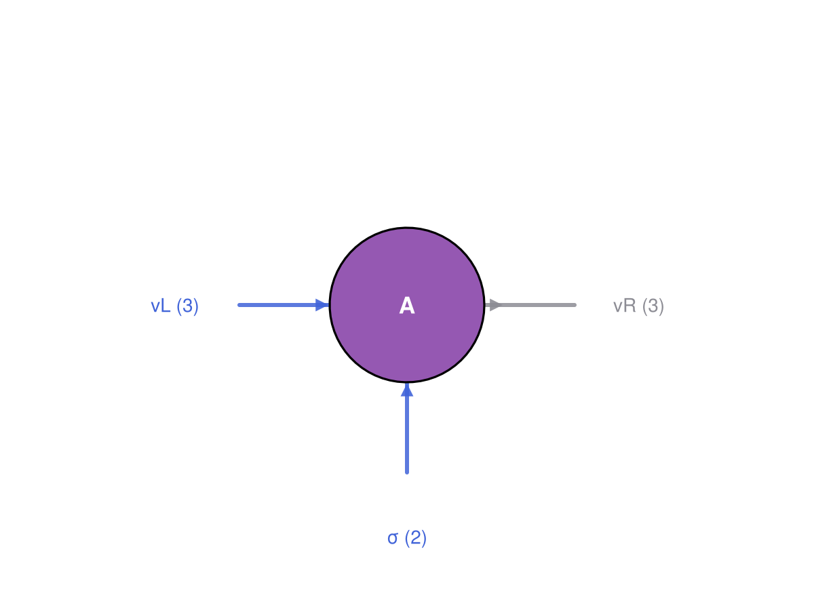
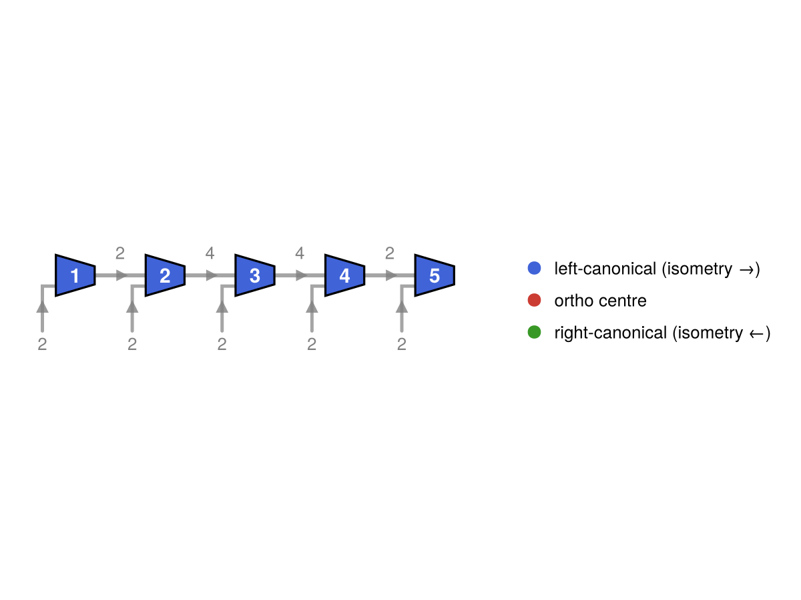

GS-1 · Tensors & Indices
Page info draft needs rewrite needs proofreading
| status | draft needs rewrite needs proofreading |
| last updated | 2026-07-10 |
| written by | Bavithra Govintharajah |
| edited by | Claude Sonnet 4.6 — initial draft |
This page introduces the atomic object in Qritical: the leg. A leg carries three things a label, a loc - Upper/Lower (to denote whether it is covariant or contravariant), and a dim. For the scope of this project we consider Tensors to just be multi-dimensional array with complex numbers. The tensors have a tuple of legs, one for each axis dimension. A Contraction is performed by matching index labels and locations.
using Qritical
using TensorOperations # we make use of the command `@tensor` to perform contractions
using CairoMakie # activates QriticalMakieExt and enables `draw`
using Random
Random.seed!(20260710) # fixed seed so rebuilds don't churn the printed outputRandom.TaskLocalRNG()1. The leg as the unit
Build one leg of each variance. upper/lower are the constructors; dim, label, and which_space are the accessors.
vL = upper(:vL, 2) # virtual bond leg: inward / incoming → Upper → domain (V')
σ = upper(:σ, 2) # physical spin-½ leg: always Upper in Qritical's MPS conventionTIx{Upper}(:σ, 2)(dim(vL), label(vL), which_space(vL)) # (2, :vL, :domain)(2, :vL, :domain)(dim(σ), label(σ), which_space(σ)) # (2, :σ, :domain)(2, :σ, :domain)A leg matches by label, not by position — this is what keeps contraction robust past two tensors, where "which axis is which" stops being obvious.
2. Wrapping data
A QTensor is a numeric array plus a tuple of legs, one per axis. It is an AbstractArray, so it indexes and broadcasts like one, but it carries leg metadata. Here is a rank-3 left-canonical MPS site tensor A[vL, σ, vR].
d, χ = 2, 3
A = QTensor(randn(χ, d, χ), (upper(:vL, χ), upper(:σ, d), lower(:vR, χ)))3×2×3 QTensor{Float64, 3, Array{Float64, 3}}:
[:, :, 1] =
-0.480327 -1.21161
-0.792592 -0.0679285
-0.286976 1.50306
[:, :, 2] =
1.55835 -0.445667
0.00173221 -0.815002
0.903743 -1.23056
[:, :, 3] =
0.0244543 -0.941448
-0.65852 -0.279706
2.1776 -1.00818(length(A.indices), ndims(A.data), size(A))(3, 3, (3, 2, 3))QTensor shares memory with the array it wraps — construction does not copy. The legs follow the left-canonical convention: vL is Upper (incoming), physical σ is Upper (always contravariant), and vR is Lower (outgoing toward the next site).
draw renders this as a node diagram — blue stubs are Upper (incoming), grey stubs are Lower (outgoing):
draw(A; name="A")
3. Variance is the convention, not decoration
| Leg orientation | Index | Role | Space |
|---|---|---|---|
| inward / incoming | TIx{Upper} | contravariant (superscript) | domain V' |
| outward / outgoing | TIx{Lower} | covariant (subscript) | codomain V |
Mnemonic (von Delft's arrow rule): Upper arrows point in (toward the tensor), Lower arrows point out (away from it). In an MPS, bond arrows point toward the orthogonality centre, so the variance of virtual legs is form-dependent (left-canonical: Upper←…, right-canonical: …→Lower). Physical σ is always Upper because it represents the contravariant ket-expansion coefficient $A^{\\sigma}$.
Variance is semantic: two legs with the same label and dim but opposite variance are not the same index:
upper(:α, 4) == lower(:α, 4) # false — variance distinguishes themfalse4. Contraction
The Einstein rule: contract exactly one Upper against one Lower with the same label. Build a neighbour B whose left virtual leg (Upper :vR) is the incoming face of the bond, matching A's outgoing Lower :vR.
B = QTensor(randn(χ, d, χ), (upper(:vR, χ), upper(:σ2, d), lower(:vR2, χ)))3×2×3 QTensor{Float64, 3, Array{Float64, 3}}:
[:, :, 1] =
-2.21643 0.607555
-1.96055 1.47874
-0.55591 0.87555
[:, :, 2] =
-0.0323164 -1.24892
0.721047 -1.42092
-0.526347 -1.64561
[:, :, 3] =
1.49194 0.463666
0.193714 -0.594486
0.270703 0.221455Contract A and B over the shared bond :vR. The index names in @tensor are positional labels — slot 3 of A and slot 1 of B both get the name :vR and are summed. The result is a plain Array (TensorOperations does not auto-wrap in QTensor).
@tensor AB[vL, σ, σ2, vR2] := A[vL, σ, vR] * B[vR, σ2, vR2]
size(AB) # (χ, d, d, χ) = (3, 2, 2, 3) — the bond :vR is summed away(3, 2, 2, 3)5. Partition vs variance
Two orthogonal notions, kept deliberately separate:
- Variance (
Upper/Lower) is intrinsic per leg, fixed by orientation. It never changes and governs contractibility. - Partition is a per-operation choice: which legs become rows vs columns when you matricise a rank-
ktensor for an SVD. This is theBipartition, applied bygroup_legs. It is the entry point to GS-2.
Cut A[vL, σ, vR] as {vL, σ | vR} and matricise:
bp = bipartition(AbstractIx[A.indices[1], A.indices[2]], A) # left = {vL, σ}; right inferred = {vR}
M = group_legs(A, bp)
size(M.data) # (χ*d) × χ = 6×3 matrix; left legs → rows, right leg → columns(6, 3)The two output legs are fused MulTIx legs recording their constituents and the product dim. complement and bipartition are the implicit-other-side conveniences used above.
6. Edge cases
An order-0 (scalar) tensor has no legs; its value is read with an empty index.
s = QTensor(fill(3.0), ())
s.data[] # 3.03.0A dim == 1 boundary bond is allowed (the open ends of a finite MPS). A leg whose dim disagrees with the wrapped array's axis size throws ArgumentError at construction — leg metadata and data can never silently drift apart.
try
QTensor(randn(2, 3), (upper(:i, 2), lower(:j, 99))) # dim 99 ≠ array axis 3
catch e
e
endArgumentError("leg 2: array size 3 ≠ index dim 99")7. Visualising a tensor network
A chain of site tensors connected by shared virtual bonds is a Matrix Product State. to_mps decomposes a rank-$L$ state tensor into such a chain via iterated SVD. draw lays the result out as a horizontal node diagram — sites coloured by canonical form, bond dimensions annotated on each edge, physical leg dimensions below each node.
L = 5
ψ = QTensor(randn(ntuple(_ -> 2, L)), # rank-L: one spin-½ leg per site
ntuple(i -> upper(Symbol(:s, i), 2), L))
mps = to_mps(ψ) # left-canonical by default
f = draw(mps)
resize_to_layout!(f) # shrink the figure to the diagram's true extent
f
cf. quimb's tensor basics: same idea that a shared index name forms a bond, but here each leg is variance-typed, so contractibility is checked rather than assumed.
This page was generated using Literate.jl.